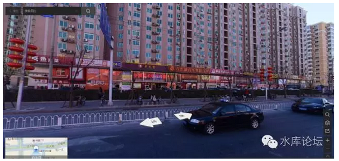
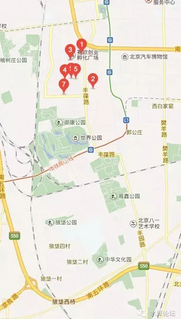
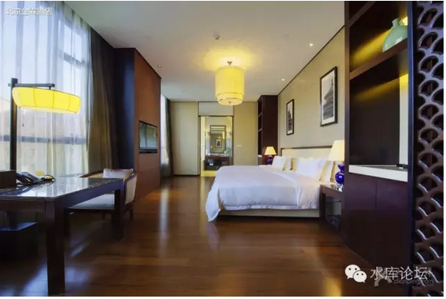
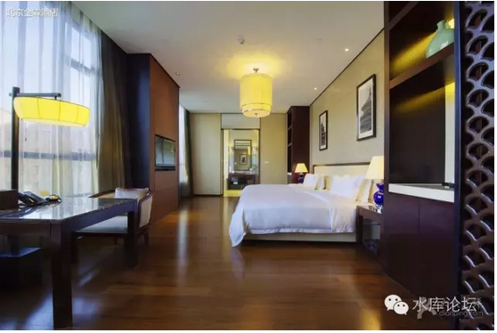

支离破碎的北京市场 #2540
原创： yevon_ou 水库论坛 2016-09-28

支离破碎的北京市场 #2540
宏观强劲，微观无序
一）微观无序
在《房地产市场的二朵乌云（上）》一文中，我把诸多网友的留言留在了下面。
你细看这些评论，他们对于"二朵乌云"的猜测，集中于"美联储加息""政府宏观调控""资本外流""房产税"之类云云。
房产税我就不吐槽了，纯粹智商和人渣都有问题。详见《帝国的砒霜---房产税》。
回过来讲"资本外流""政府调控"之流；
显然，他们都误解了"乌云"的含义。
乌云，指的是"理论体系"内部的不自洽。好比牛顿力学算好了乒乓球要落在这个位置。而实际上没到位。
而很多人说的"资本外流""美联储加息"。这个其实是"风险"，而不是"乌云"。
你指的是，外部环境变化，而导致的房价下跌。
这个风险我们是不在乎的。因为所有已感知的事，都可以纳入计算。
"美国加息"之类的风险，早已经被包括进去了。哪怕耶伦未来五年狠狠加几次息，我们也毫不在意。
而"乌云"之所以重要，因为它反映了一种哲学精神。整体世界"井井有条"的精神。
好比你出去相亲，对面来一个男的。180cm的身高，阳光健康。
会讲四国外语，月入30K。有房有车无贷，父母双亡性取向正常。
怎么看，都象是一个蒸蒸日上的有为青年。
可是你"咔嚓"一刀，把他的脑袋切下来。
把他的肚皮剖开。
然后你发现他的"内脏"完全是颠倒着长的。左心房直接连到胃包上面，食道通往胰腺，肺包连接十二指肠。最要命的是浑身没有淋巴系统，血液是蓝颜色的。
"妈呀，鬼啊"！
恐怕你要尖叫着跳起来，不知道什么[外星怪物]。这样的男人绝对不能嫁。
有人说，老师啊，您又在唠里唠叨讲废话了，云里雾里的前言就写了六百字。
其实我想说的是"北京"。
北京就是这样一个市场，"宏观强劲，微观无序"。
从宏观上看，北京的市场好得不能再好了。
北京不仅仅是全中国房价最高的市场，同时也是总市值最高，增长最快，购买力最扎实，上升空间最无穷的市场。
但是微观上呢，你拿把刀，把它"开膛破肚"地切开。
微观上看，北京这个市场简直没法看。头重脚轻，十二指肠接在肺泡上面。
整一个E.T.外星人。
二）北京市场
中国第一大都市是哪个。
上海？远东第一大都市。长期以来中国人口No.1，GDP No.1的东方明珠。
您早Out了。最多再要三五年，不仅仅GDP第一的位置保不住。恐怕连人口No.1也保不住。
深圳？免提。
香港？严格说香港也排不上号。香港吃亏在只有700W人口，从曾荫权提出要"不惜一切增加人口"，力保国际都会开始。由于香港本土阶层的层层抵抗，HK的人口一直增加很缓慢。
人口从670W花了十年，才到700W。
人口不足，使得香港GDP产出已经被深圳超越。在中国总体城市排行榜更是遥遥无望。
中国的第一大都市，必然、注定、只能是"帝都"北京。
长期以来，北京一直是一个"贫穷落后"的城市。其人口仅有上海的2/3.
更惨的是，人均GDP只有上海的2/3，当上海9000美金时，北京只有6000多美金。
可见其"城市发展水平"落后一线城市一大截。
这个现象，从朱相退休，秀相上台，开始发生急剧的变化。
时至今日，北京在人口，总量，人均等各项指标都已经追平。进一步反超，也就是瞬息之事。
最极端的是，2010年北京银行谋求上市。做上市前最后的pre-ipo准备。
当时去谈了一次，北京银行表示"在过去的一年中，各项存款指标+50%"。
考虑到北京银行基本上是一家[总部在北京]的银行。他的"吸储"能力主要是北京居民的存款。
四万亿及其带来的后果，从北京银行令人震惊的增长速度可见一斑。
言归正传，如果我们观察北京。北京这个城市：楼矮，路宽，户型大。
由于紫禁城严格的限高。北京二环以内，民宅基本都是八九层的最高。
而要到了外圈，三环边上，开始出现一些"高层住宅"。但也不是"特高层"。一般也就三十几楼为限。
几乎很少见四十至六十层的超高住宅。
另一方面，北京"大气，路宽"。
长安街就不说了。普通的100米宽大马路也修得不少。
而且北京的建筑，还有一个很奇怪的现象。喜欢"后缩"。
每一个商场Shopping Mall的门口，都往内缩进20米。留出了偌大的一块空地平白。十分适合跳广场舞。
象铜锣湾SOGO这样一贴马路就是大门。在北京从未见过。帝都企业大气，土地都象是不要钱似的。
这几件事的合力是什么呢。就是"宽街无闹市"。
一场繁华的，喧嚣的，摩肩擦踵的"吃喝玩乐，声色犬马"，是集中在一定的人口密度上的。
人口密度不足，则商业无法存活。又或者退化为郊区一个又一个巨大的"停车销品茂"。
（如图，中世纪支撑一种职业需要的最少人口SV）

北京本身的建筑高度很低。楼矮人就少，商铺就不值钱。
然后北京的马路道路很宽，车多人少路障前后。使得步行走二个Block变得毫不可行。得绕几次街角。
而且北京很冷，冬天狂风暴雨积雪三尺。
你若观察广州，广州的夜生活很丰富。半夜一二点还有大把人在路边吃宵夜吃排挡。
而到了上海，这种现象就少了一半。
到了北京，宵夜传统就绝迹了。神经病才半夜跑出来吃烤串。
你以为北京人不喜欢享受。其实是气温决定了一切。
冬天广州30度，上海15度，北京0度。你以为演韩剧啊，没事出来眼泪汪汪喝烧酒。
综上所述，就是北京的"社区商业"极不发达。
北京也缺乏那种雅致的"步行文化"。在绿树成荫的秋天午后，逛着长乐路襄阳路湖南路，二旁精致的韩装，饰品店，隐蔽的米其林餐厅。
北京的特点是；
-
你要出门你就开车
-
既然开车了，就不在乎多开远一点
-
最终每个人都是去到郊区的，千篇一律的销品茂。
三）级差地租
上海是有明确的地段的。因为上海很"高"。有明确的摩天大厦和CBD。
上海是全世界"摩天大厦"最多的城市，有超过10000幢30层以上的高楼。最多的上海市民，生活在半空中。
如果你去SWFC观光厅，遥望远处，你会看见无穷无尽的高楼，无穷无尽的云海玉弓缘，直到尽头。
千万别去拍东方明珠，老傻的。你要拍就拍"高楼直到云海尽头"，这才是全世界唯一难得一见的景观。


直到视线尽头，云海落幕，于是建筑高度逐渐低矮下去。到了青浦几乎没什么高楼。
于是你知道了，"去上海"。
"去上海"，这是一个明确的动词。在长江的尽头，有这么一座拔地而起的城市。
他和广袤的农村截然不同。和沿途的小乡镇截然不同。
如果你去苏州市里看看，也都是二三层的旧街，旧楼。
只有到了上海，才是Skyscraper.
而北京呢。北京只想让你哭。
"去北京"作为一个动词，名词，形容词。他都是不成立的。
北京就是一个大农村。
一路上，你从河北溯流而上。河北是破破烂烂的一个大农村，四五层的砖瓦房。偶尔郊区一个巨大无比的停车场Shopping Mall.
而当你进了北京，你所看到的，还是四五层的砖瓦房。
人民贫困，墙角肮脏。垃圾遍地都是。
还是同样的，一个郊区的Shopping Mall，生活平淡乏味。
你甚至都不知道自己已经换了一个"行政区"了。
已经从河北进入到了北京的六环，五环，四环，三环。
严格地说，北京甚至都没有一个Skyscraper的天际线。让你知道北京的"核心"中心在哪里。
北京也没有特别热闹，热别值得一逛的核心商圈。摩肩擦踵连手帕都捡不起的体验。
没有核心，如何追随。
绝大多数"北漂"的人，就是买了张火车票，到北京站出来。
随便找个点落脚，就算扎根了。
北京没有核心，也就不存在一代代持续努力，向内环线挤。
四）北京的地段
随着文化和面貌之不同，反映到房地产市场，则是北京的地段原则。
几乎每一个北京朋友都会和你说，"北京虽然是按照环线造的，但是北京的地段，并不遵循环线原则"。
譬如说，二环以内，老北京胡同。
各大部委基本都在二环。衙门的石狮子威严耸立。
但是二环以内的"地段"价值并不高。也没有什么成型的富人区。
因为北京的"二环内"基本遵循"不开发"原则。
拆迁的阻力太大，政府也没那个兴趣。
成片开发楼层不能造得太高，塞条子拿房子的人也太多。KFS没利润。
所以二环内基本是"贫民化"。全部都是破烂肮脏的十元小店。
吃着沙县小吃吉祥馄饨，老北京炒干。住着容积率不到1.0的四合院。
好吧，你说二环是一个孤例。咱们先忽视二环。
北京的好地方，好东西，基本都集中在三环沿线。
从双井，国贸，亮马桥，三元桥，太阳宫，望京，奥体，中关村，金融街，复兴门。
既然二环无法开发，则政府把所有的好东西都建造在了三环。
(如图，日光初醒的CBD早晨。几乎所有的北京都市生活片，开场白都是东三环的高架路拍)

如果你说所有的国家部委，全部都在二环。
豪奢商业设施，都在三环沿线。
出去到了四环五环，则只有"满足基本生活需求"的销品茂。提供大娘水饺味千拉面Uniqlo冲锋衣等等屌丝标配。
如果你说"北京楼市"是这么一个等级流程。那么我捏着鼻子也认了。
二环内算特例，剐了一个同心圆。忽略。
以三环为核心。向外辐射。越是远的地方，配套越差，档次越低，低端货横行。房价更贱更便宜。
放射型。
可是北京的楼市，它根本不是这么一个玩法！
全北京最好的地段，就业岗位最集中，收入最高端，商业最丰富，配套最完善，最适合人类居住，享受现代都市人情味。
可能就是东三环"国贸"附近这一带。北不过三元桥，西不过工体。
可是这一带的房子，一点都不贵！
北京真正贵的，是海淀。
海淀的房价，远远超过朝阳。
若你真的去海淀看看，海淀可以说是"一片残破"。
譬如说，如图这样的房子，你给它估价多少。

我如果不告诉你，你根本不会知道这是哪里的房子。
眼看"加州李先生牛肉面"，"儿童摄影请上18楼"，整一个破破烂烂的商住。
这种物业，如果放在山西小县城，就是4000~5000/m的样子。
而且四五千还没人要。整个城市，呈现着一种破败而萧条的样子。
但这里是海淀。如果你联网查一下价格，链家报价差不多在90000元/m，一千多万一套。
10000000，您还别嫌贵，你还别还价。
然并卵，一到秋冬季，整个街道还是呈现出一片萧条而破败的味道。
居民的消费，只享受得起李先生牛肉面。
走道里贴满了小纸条，电梯破破烂烂。商住进进出出。
"老公，你不是答应让我住千万豪宅么"。
"我们做到了"
"今天早上见到房东，他说这房子升值，要一千多万了"。
这样的房子，如果放在山西县城。就是4000~5000的档次。
破破烂烂，低端低档，没有丝毫豪宅的味道。
按照某些YP的说法，"送给我也不要"。
可是这里是北京，在北京，它就是90000/m。
我不是吐槽北京贵。正好比我们"宏观"上讲，北京是一个很贵的城市，是中国第一都市。
既然北京贵，比山西贵20倍也是合理的。
我是吐槽"海淀贵"。
你要知道，在国贸，在CBD，在朝阳区东三东四，非常好的豪宅也只有80000元/平米啊！
前阵子在东大桥看房子，非常好的全豪宅格局。顶级地段，附近什么都有全配。
房价只要60000/m.
东大桥几乎是我最喜欢的地段了。
我是吐槽北京在"微观"上的不均衡。
海淀价格远远超过朝阳。
破破烂烂萧瑟败旧的社区，价格远远超过CBD顶级豪宅。远远超过工作岗位金领聚集区。
有人说，"海淀"有学区。北京好的学校基本都集中在海淀。
好吧，假设你"贵"的理由是学区。
那么我们拿支笔来计算一下，北京海淀的物业，整体要有数万亿的市值。
如果你的溢价是建立在"学区"的基础上的话，则增值的原因，是那么几百个老师。
哎呀妈呀，吓死我了。赶紧先买份人寿保险压压惊。
这样算下来，岂不是一个老师价值百亿？
老师呀，您出门可千万别被车撞呀。
冬川豆近期有一篇文章，讲大学教育。[[1]]
俗话说，"政治正确无所不在"。
在买房这件事上，你当然也需要顾忌"政治正确"。顾忌社会上的共识，舆论正导向。
譬如说，你花掉了全部的毕生积蓄，再贷款三十年，背几百万房贷。买了一套1000W，70平米，二十年楼龄的无电梯老公房。
亲戚们一定都以为你疯了，以为你SB。花大好的人生买房子不值得。
可是，如果你说，那房子是"学区房"。一切都是为了孩子，一切都是为了教育。
则"孩子""教育"顿时就是"政治正确"。
亲戚们一下子全被打哑了失声。
然后他们还要反过来恭喜你"学区房总是涨的"，"学区房有升值潜力"。
这就是政治正确，你买普通房子，亲戚们会[嘲笑房价跌]评论你SB。
你花1.5倍价钱买学区房，顿时就是"大爱无疆"。
而至于学区房是否真能通往"国家干部"的金光大道，这笔投资是不是赔了。旧式科举会不会在一夜之间废除。
亲戚们才不管这事呢。他们在恭维你的同时，又不会真心关心你。对于很多亲戚来说，他们最渴望恨不得看你破产。
本质上，我是极度看淡"学区房"的。学区房在价值上"一文不值"。
相应的，海淀区的房价一文不值。
整个几万亿市值，全部都是沙滩上的泡沫。
五）尊卑贵贱
如果将北京楼市比作一个人的话，那么他是一个"180cm的阳光男孩，身材高大，笑容甜美"。
"月入50K，有房有车无贷，父母双亡很乖"。
从宏观上看，北京楼市好得不能再好。
房价很高，涨得很快。后续购买力也充足。
但是从微观上看，北京楼市一塌糊涂。
简直就是气管接在食管，大肠接着血泵。
"海淀贵过朝阳，县城房卖9W"仅仅是最初的印象。你继续看下去，越是深入了解，越是不可理喻。
从原则上讲，北京可以"在任何一个地段，新造10W元/m的房子"。
北京的"地段扁平化"早已不是什么秘密。六环外的房子，完全可以比三环更贵。
而这事发展到极端，则是"10W+随便建"。
目前北京的市场，基本只要KFS肯用心。把软装做上去，则任何一个地段，都可以开出豪宅。
无论是三环，四环，五环，六环，七环。
东西南北通。
而另一方面，"开出十万"，不意味着你房子的涨价。
好比你一个小区，左手是十万，右手是十万。
您呢，您还是五万。
往大里说，北京任何一个光彩夺目的社区，800米之内，必有"城中村"之类的建筑。
有人说，广州是中国最大的城中村。真实完全污蔑伟大首都。北京才是全中国最大的城中村。
（SKP附近的光辉里，污水四溢。商铺背后是个垃圾处理站）

在北京，不存在"地段，比较，级差"之类说法。
二块很好地段之间的地块，上海人很可能想办法把它"改建"。拆空，重建。
可是北京几乎完全没有"改建"。政府也没什么兴趣"重组"。
北京那么大，建成面积是上海的三倍。绝大部分区域都没有得到"充分优化"。
按照任志强的说法，"遍地是黄金"。
而目前，北京的市场依然以"摊大饼"的方式向外外延。以新区卖地的方式向外外延。
这使得北京任何一个区域都没有得到"充分开发"。
在二个极端昂贵的大型社区之间，往往是废弃的空地，荒无人烟的仓库。贫民窟和毫不值钱的土坯房子。
让人对地产彻底丧失信心。
上一次我去丰台的"总部基地"。
如果你经常坐飞机的话，则航班杂志上的广告铺天盖地。
总部基地号称在五六年前2010就开盘，当时就要卖五六万。
今天按照不亏钱的升值速度，少说也得卖七八万才够本。
但是我沿着丰葆路一路往南开。

然后我就看见了一块空地。
然后我又看见了一块空地。
然后我又看见了一整块完全晾晒的空地。
然后我又看见了3*5块完全晾晒的空地。
............
我忍不住叹息说，真心想不到，"总部基地出来500米，就已经荒凉如此"。
彻底荒芜，完全没有人烟。
按照目前的房价和地价，8W一平米倒推。你相应的这每一块土地，都要拍卖到100亿以上。
而你知道100亿，对于工商业来说，是一个什么概念么。
华夏银行的市值才一千亿。
这一路过去，我掰着指头数着。一块，二块，三块，四块............
手指头不够用，脚趾头也不够用。
真的有那么多的企业来填满么？
这无穷无尽的荒地，北京市大兴区的[荒地]值几千亿资产么。
还有一次，我跑到前门去看一个酒店。
前门大街，在老北京的地位，想必不用说也知道。商业街首选，北京的一张名片。
当然改造后是一落千丈。
一家酒店，配无边游泳池。单卖拆散房间。
它房间卖得不贵，折合单价才1W多点。
温泉入户，地底千米硫磺温泉。

 

在谈论中，那小姑娘说，"你若是真有钱，就出3亿现金。200多间客房一起拿去"。
我一口血吐在海报上，"前门边上的完整酒店，就卖3亿"。
"那你老板为什么要卖呢"。
销售经理叹了口气，"生意不好，没人住"。
"每天晚上要370元/晚，太贵了消费不起"。
哥哥吐血快吐成红罐凉茶了。当然我也拿不出这么多现金。就是感慨想做寓公。
北京楼市给人整体的感觉，是"洼地"实在太多了。
处处都是洼地，处处都是套利机会。
但是当你破绽到了无穷大时，你又变成了"没有破绽"。
因为当你有1001个破绽时，你填补了一个。但是这一个并不能变成利润。
"套利"不能马上产生利润。
后来者还有999个"洼地"可以填。他们何必接你笋盘呢。
只有市场完全健康。套利机会完全抹平。
这时候你发现一个"洼地"，才是赚钱的机会。
六）北京的新房市场
当支离破碎的北京楼市，和码农屌丝的"处房情结"结合在一起，事情发生了更恶劣的变化。
凤凰，尤其是老家乡村算混得比较出头的凤凰，他们是"自视颇高"的。
对于凤凰来说，有一点铁的原则，就是"只买一手房"。
房子偏一点，远一点，交通不便。这些都不重要。
房子贵一点，坑一点，满是概念。被坑了也乐意。
屌丝于是哭诉着"房价太高，穷无立锥之地"。一边花着几倍的性价比，买着五环六环外的"豪宅"。
目前北京房价严重倒挂，三环并不贵。某人刚还在亮马桥找到五万华远的房子。也不是大户型。
可是五环外很贵，六环也很贵。
只要是屌丝买的，郊环都很贵。

更为恶劣的，是连"环京"都涨了。
屌丝们一边抹着眼泪，一边对北京市内无数无数的"洼地"视而不见。一边非打破头去买一手房。
不值得同情。
(燕郊，香河，大厂如图。地图尺寸是5KM)

最为搞笑的，是通州搞"限购"。
通州本来是一个20000元/m都不到的市场。
"新北京"规划一出来，立刻把自己提高到50000元/平米。
而且吊得要命。"史上最严格限购"，要在通州的工作社保，才有资格购买一套。
好像生怕炒房客提早知道了新京的消息，赚走了资产上涨的好处。
我有时候在想，你那破旮旯，二万的时候我都看不上眼。五万真有人抢么。
除非"处房情结"到了晚癌末期，山沟沟里来的凤凰屌丝。
否则我不会在北京城里买么。
你住"新北京"，我住"新首都"。
以后通州成为新北京，把市政府的人马都迁过去。
而北京成为"首都特别市"，四环以内改名字叫"ShouDu"好了。
咱们留守首都。
七）套利的无力
北京是一个支离破碎的市场。
-
该贵的不贵
-
该便宜的不便宜
-
好的卖不出价钱
-
品质无人欣赏
-
学区充满风险
-
处房屌丝疯抢
-
市内洼地连连
-
十万土豪随意
一般按照"正统"的经济学理论。在这样情况下，会发生"套利"行为。
好比我把周浦八万的房子卖了，换回小陆八万。
哪怕贴点钱，咬咬牙，付个按揭月供也能凑足。
北京市场的特点，在于北京"套利"行为完全无法进行。
北京是迄今唯一"严格征收"20%差价个人所得税的城市。
如果你一套房子，买得早，当年100W入手。
经过了十年，房价涨了十倍。现在1000W。
则你在交5.55%营业税，九百万大约45W之余。你还要交900*20%=180W的个人所得税。
显然，这个接近200W的税收是完全无法承受的。
屌丝们别轻飘飘的说"赚了1000吐200也正常"，换你自己身上，你试试愿意么？
在北京你想买一套房子，想完成一次房产交易，可能是全中国最困难，最复杂的。
作为买方，买房必须"破限购"。可能牵涉到离婚，五年社保等等一系列的麻烦事。
北京市场的特殊之处，在于"卖方"也得要离婚。
离婚，单身出户。名下只保留一套房产。
然后你再等五年。
等到满五年之后，符合"满五唯一不用交所得税"的这条政策。
谁没事离了婚等你五年啊！
所以北京市场的二手房交易极为困难，大约98%的筹码被严格锁定。
每一年北京市民眼看"供不应求"，买家一房难觅。手里的物业又升值了。
可是升值了你也不舍得卖。
卖了就是20%的税。
对于炒家来说，"北京"几乎是炒房的地狱。
因为税收过于严格，市场上能寻觅的笋盘很少。
哪怕卖主卖给你很笋，经过了"税收拔毛"也变得不笋了。
再加上极端苛刻的"破限购"条件。
一般炒家是懒得出手。何必呢，何苦呢，同样炒房子，深圳上海要赚钱容易多了。至少省心力。
另外有点篇幅，不妨要吐槽一下北京的中介业。
北京的中介差，极差，极度差！
北京的中介收费，是全中国一线城市中最高的，平均要到2.7%，折扣后大约2.2%
我南方随便找一个仅收0.5%的中介公司，就能彻底秒杀你。
不仅仅是秒杀，而是横扫。彻底把你扫到垃圾堆里。
南方和北方的服务业，其差距以光年计算。至少差好几个世代。
北京的服务业，和国营餐馆拇指扣在碗汤里的大妈差不多。他们根本不知道什么叫做"服务"。
北京的中介产业，只要把你带到楼下。指了指门牌号。其他什么事都不管。
而不象南方提供"过五关斩六将"的一条龙服务。
如何破限购，如何破限贷，如何做银行流水，贷款贷不出怎么办，流水银行不认怎么办，资金跟不上要延后三个月怎么办，上家是药单怎么办，上家想抵赖怎么办............
如果不是解药，我要你中介干什么 :@:@
北京的中介，几乎什么事也做不了。他们也不帮你动脑筋想办法，不会帮你解决任何问题。
懒到只要伸手指一下房源，就想收十几万中介费。
如果能确信北京市场没什么"衙内"插手的话。
则你从南方搬任何一个中介公司过去，都能彻底秒杀，横扫。
南方任何一家仅收0.5%的中介公司，都比北京2.7%好得多。
让北方人见识一下什么叫做服务业。
八）结语
北京是全中国最大的城市，最大的房地产市值，最大的房地产市场。
从宏观上看，北京是最好的城市。
但是从微观上看，北京支离破碎。
我们很讨厌那些"大而化之"的砖家，一开口就是"北京，美国，汇率资本......"
"北京跌30%，上海跌50%"
"货币战争，汇率战争，外汇锁定"最近朋友圈刷屏。
我们深受严谨的Marketing训练。凡事喜欢切碎了来看。
Break Down，宏观有序的东西，必须微观有序。否则就是气管接到食道上的外星怪物。
很可惜的是，北京就是这样一个"外星怪物"。
北京的市场支离破碎。好的不卖贵价，坏的不卖贱价。说到底，你都不知道它的价格体系是如何制定的。
有的时候，我不怀恶意地想，北京楼市就是一个"土豪市场"。
有一个土豪来到北京，他可以在任何地段，只要他看得顺眼，就可以一掷千金花个3000W买房子。
所以北京市场[没有规律]可循。因为你无法预测土豪的心血来潮。
另一方面，北京的"整体风险"极大。
北京并不象上海这样，有一个整体崛起的CBD。又或者说，建筑物的高度线。
北京从整体上来说，就是一个破破烂烂的山西县城大农村。
以北京的建筑质量，生活氛围，配套设施。
从级差地租来讲，如果北京不是首都。他的房子就象山西一个县城，最多卖太原的价。
北京的"建成面积"，比上海大三倍。
其人口却差不多。
也就是说北京的"人口密度"要比上海稀疏三倍。
从大地图上看，北京几乎每一寸土地，都没有被充分开发。
北京的房价是被"硬拉"上去的。
对于这样一个平原城市，几乎可以无穷无尽的扩张。你凭什么卖这么贵。难道只凭不饱和供地。
从丰台"总部基地"出来，就被无穷无尽的华北荒野给吓破了胆。[[2]]
炒房这一科，赚的是别人的钱。重在"囤积居奇"。
好比我看见一样好东西，抢先购买在手。等到需求起来了，价钱翻了几番，我再卖给你。
可是北京的土地市场，让我感觉根本不存在"囤积居奇"的土壤。
最有钱，最有权势的是赵家人。
你想赚赵家人的钱么。赵家人根本不需要买房子。土地都是他们的。他们想要哪块地，用笔一勾就行。
而各大部委呢。部委的干部们收入也很高，难保就是隐形富豪。
可是部委干部也不需要买房子。几乎每一个部，都有自己保留一亩三分地。部属土地，到时候拿出来运作一下，大家分了即可。
四环以内，有得是空地好地。
而北京土著们呢，北京土著也不缺房子。
北京向来以"户型大"著称。当上海2001年造120平米房子时，北京造的都是180平米二房，还是经济适用房!
北京人不缺房子，北京土著不缺房子。人家笑眯眯地等着房产升值，升到10万元后卖给你呢。
坦白说，除了学区房。我就没见过北京土著砸锅卖铁买房子。
那么这一个个的"买家"都排除了。最终你赚什么钱呢。
最终赚的，就是全国各地赶过来的"土豪"。
您有钱是吧，在家乡开小锰矿厂的。现在送孩子来北京读书，落地生根。
行呀，这套二居室1200W，就卖给您吧。
咱北京人就等着靠这笔钱发财呢。
总体北京市场，感觉"住房面积"并不稀缺。"居住品质"也并不优越。
并不是一千万的房子，能买出豪宅范，享受灯红酒绿的。级差地租极低。
而是每一个人，从赵家，各部委，土著，炒房客，每一方都是"净卖出"方。
都想赚土豪的钱。
在上海，如果是6:4，六个既得利益者赚4个新移民的钱。
则在北京，就是9:1，九个人齐心协力瓜分一个买家土豪。
如果你居住在北京，则北京的房子，你先需要买一套。
如果你一套都没有，你就变成了"刚需"。刚需很容易被"打爆"。
打爆的意思，是你非买不可，无论对方开多少价格，弄到急时你都必须接受。
但是"投资"，尤其是大头寸的建仓位，那就免了吧。
因为北京的房子，实在是很"混乱"。
都在瞎砍。
北京的市场，越看越是心惊。
越看越是迷惘。
我始终无法解释"价值"之所在。北土城卖你一套房子十万，请问价值如何盘算。用哪个公式计算出来十万。
水库的玩法，与别人不同。
别人是看见"涨了"，于是赶紧跟进去。追涨杀跌。反正是赚钱了，你问那么多问题干嘛。
而我们是冷眼旁观，非得把整件事情想得清清楚楚。再也没有半点乌云，"了如指掌"。然后我们才开始大规模建仓。
一旦我们开始入局，判断就绝对不会出错。今后的三年五年走势，都是算出来的，而不是猜出来的。
北京市场，始终无法"算"。
太混乱了，太不市场化了，太缺乏套利了，太没有逻辑了。支离破碎完全就是瞎猜。
这种感觉，很不好。
好比令狐冲学会了"独孤九剑"，天下武功，无一不是破绽。剑法天下无双。
可是等他被林平之，左冷禅关在漆黑山洞时，黯淡无光，他的剑法也无从施展。
所有的人都是闭着眼睛挥舞刀剑瞎砍。
无论多强的武林高手，和一个莽夫无异。
这种感觉，很不好。
（yevon_ou@163.com，2016年9月27日午）
[1]《刘仲敬谈中国高等教育 | 冬川豆》http://mp.weixin.qq.com/s?__biz=MzI4MjA3MTg2OA==&mid=2652506702&idx=2&sn=e7ff4e3a565031b8ea50485cb4209e18&chksm=f0712c1dc706a50b0c6f664d55751c0d83c2c0e4e796a815117e41b53a92b2e9cf3d7df75319&scene=1&srcid=0923ozjLzxua6haI5GMuQRHa#rd
[2]知乎上有一篇文章《再造一个新成都，折射出中国房地产现状》，可以推荐一看。https://zhuanlan.zhihu.com/p/22484065